Chapter 10 Unsupervised Learning
This chapter deals with machine learning problems which are unsupervised. This means the machine has access to a set of inputs, \(x\), but the desired outcome, \(y\) is not available. Clearly, learning a relation between inputs and outcomes is impossible, but there are still a lot of problems of interest. In particular, we may want to find a compact representation of the inputs, be it for visualization of further processing. This is the problem of dimensionality reduction. For the same reasons we may want to group similar inputs. This is the problem of clustering.
In the statistical terminology, and with some exceptions, this chapter can be thought of as multivariate exploratory statistics. For multivariate inference, see Chapter 8.
10.1 Dimensionality Reduction
10.1.1 Principal Component Analysis
Principal Component Analysis (PCA) is such a basic technique, it has been rediscovered and renamed independently in many fields. It can be found under the names of Discrete Karhunen–Loève Transform; Hotteling Transform; Proper Orthogonal Decomposition; Eckart–Young Theorem; Schmidt–Mirsky Theorem; Empirical Orthogonal Functions; Empirical Eigenfunction Decomposition; Empirical Component Analysis; Quasi-Harmonic Modes; Spectral Decomposition; Empirical Modal Analysis, and possibly more15. The many names are quite interesting as they offer an insight into the different problems that led to PCA’s (re)discovery.
Return to the BMI problem in Example 10.1. Assume you wish to give each individual a “size score”, that is a linear combination of height and weight: PCA does just that. It returns the linear combination that has the largest variability, i.e., the combination which best distinguishes between individuals.
The variance maximizing motivation above was the one that guided Hotelling (1933). But \(30\) years before him, Pearson (1901) derived the same procedure with a different motivation in mind. Pearson was also trying to give each individual a score. He did not care about variance maximization, however. He simply wanted a small set of coordinates in some (linear) space that approximates the original data well. Before we proceed, we give an example to fix ideas. Consider the crime rate data in USArrests, which encodes reported murder events, assaults, rapes, and the urban population of each american state.
head(USArrests)## Murder Assault UrbanPop Rape
## Alabama 13.2 236 58 21.2
## Alaska 10.0 263 48 44.5
## Arizona 8.1 294 80 31.0
## Arkansas 8.8 190 50 19.5
## California 9.0 276 91 40.6
## Colorado 7.9 204 78 38.7Following Hotelling’s motivation, we may want to given each state a “crimilality score”. PCA returns the sequence of \(1,\dots,4\) scores that best separate between states.
USArrests.1 <- USArrests[,-3] %>% scale # note the scaling, which is required by some
pca.1 <- prcomp(USArrests.1, scale = TRUE)
pca.1## Standard deviations:
## [1] 1.5357670 0.6767949 0.4282154
##
## Rotation:
## PC1 PC2 PC3
## Murder -0.5826006 0.5339532 -0.6127565
## Assault -0.6079818 0.2140236 0.7645600
## Rape -0.5393836 -0.8179779 -0.1999436Things to note:
- Distinguishing between states, i.e., finding the variance maximizing scores, should be indifferent to the average of each variable. We also don’t want the score to be sensitive to the measurement scale. We thus perform PCA in the z-score scale of each variable, obtained with the
scalefunction. - PCA is performed with the
prcompfunction. It returns the contribution (weight) of the original variables, to the new crimeness score.
These weights are called the loadings. - The number of possible scores, is the same as the number of original variables in the data.
- The new scores are called the principal components, labeled
PC1,…,PC4in our output. - The loadings on PC1 tell us that the best separation between states is along the average crime rate. Why is this? Because all the \(3\) crime variables have a similar loading on PC1.
- The other PCs are slightly harder to interpret, but it is an interesting exercise.
If we now represent each state, not with its original \(4\) variables, but only with the first \(2\) PCs (for example), we have reduced the dimensionality of the data.
10.1.2 Preliminaries
Before presenting methods other than PCA, we need some terminology.
- Variable: A.k.a. dimension, or feature, or column for reasons that will be obvious in the next item.
- Data: A.k.a. sample, observations. Will typically consist of \(n\), \(p\) dimensional vectors. We typically denote the data as a \(n\times p\) matrix \(X\).
- Manifold: A generalization of a linear space, which is regular enough so that, locally, it has all the properties of a linear space. We will denote an arbitrary manifold by \(\mathcal{M}\), and by \(\mathcal{M}_q\) a \(q\) dimensional16 manifold.
- Embedding: Informally speaking: a ``shape preserving’’ mapping of a space into another.
- Linear Embedding: An embedding done via a linear operation (thus representable by a matrix).
- Generative Model: Known to statisticians as the sampling distribution. The assumed stochastic process that generated the observed \(X\).
There are many motivations for dimensionality reduction:
- Scoring: Give each observation an interpretable, simple score (Hotelling’s motivation).
- Latent structure: Recover unobservables from indirect measurements. E.g: Blind signal reconstruction, CT scan, cryo-electron microscopy, etc.
- Signal to Noise: Denoise measurements before further processing like clustering, supervised learning, etc.
- Compression: Save on RAM ,CPU, and communication when operating on a lower dimensional representation of the data.
10.1.3 Latent Variable Approaches
All generative approaches to dimensionality reduction will include some unobserved set of variables, which we can try to recover from the observable \(X\). The unobservable variables will typically have a lower dimension than the observables, thus, dimension is reduced. We start with the simplest case of linear Factor Analysis.
10.1.3.1 Factor Analysis (FA)
FA originates from the psychometric literature. We thus revisit the IQ (actually g-factor17) Example~10.2:
We may try to estimate \(S A\) by assuming some distribution on \(S\) and \(\varepsilon\) and apply maximum likelihood. Under standard assumptions on the distribution of \(S\) and \(\varepsilon\), recovering \(S\) from \(\widehat{S A }\) is still impossible as there are infinitely many such solutions. In the statistical parlance we say the problem is non identifiable, and in the applied mathematics parlance we say the problem is ill posed. To see this, consider an orthogonal rotation matrix \(R\) (\(R' R=I\)). For each such \(R\): $ S A = A R’ R S = S* A* $. While both solve Eq.(10.1), \(A\) and \(A^*\) may have very different interpretations. This is why many researchers find FA an unsatisfactory inference tool.
The FA terminology is slightly different than PCA:
- Factors: The unobserved attributes \(S\). Not to be confused with the principal components in the context of PCA.
- Loading: The \(A\) matrix; the contribution of each factor to the observed \(X\).
- Rotation: An arbitrary orthogonal re-combination of the factors, \(S\), and loadings, \(A\), which changes the interpretation of the result.
The FA literature does offer several heuristics to ``fix’’ the solution of the FA. These are known as rotations, and go under the names of Varimax, Quartimax, Equimax, Oblimin, Promax, and possibly others.
10.1.3.2 Independent Component Analysis (ICA)
Like FA, independent compoent analysis (ICA) is a family of latent space models, thus, a meta-method. It assumes data is generated as some function of the latent variables \(S\). In many cases this function is assumed to be linear in \(S\) so that ICA is compared, if not confused, with PCA and even more so with FA.
The fundamental idea of ICA is that \(S\) has a joint distribution of non-Gaussian, independent variables. This independence assumption, solves the the non-uniqueness of \(S\) in FA.
Being a generative model, estimation of \(S\) can then be done using maximum likelihood, or other estimation principles.
ICA is a popular technique in signal processing, where \(A\) is actually the signal, such as sound in Example 10.3. Recovering \(A\) is thus recovering the original signals mixing in the recorded \(X\).
10.1.4 Purely Algorithmic Approaches
We now discuss dimensionality reduction approaches that are not stated via their generative model, but rather, directly as an algorithm. This does not mean that they cannot be cast via their generative model, but rather they were not motivated as such.
10.1.4.1 Multidimensional Scaling (MDS)
MDS can be thought of as a variation on PCA, that begins with a distance graph18}.
MDS aims at embedding a graph of distances, while preserving the original distances. Basic results in graph/network theory (Graham 1988) suggest that the geometry of a graph cannot be preserved when embedding it into lower dimensions. The different types of MDSs, such as Classical MDS, and Sammon Mappings, differ in the stress function penalizing for geometric distortion.
10.1.4.2 Local Multidimensional Scaling (Local MDS)
Local MDS is aimed at solving the case where we don’t know how to properly measure distances. It is an algorithm that compounds both the construction of the dissimilarity graph, and the embedding. The solution of local MDS, as the name suggests, rests on the computation of local distances, where the Euclidean assumption may still be plausible, and then aggregate many such local distances, before calling upon regular MDS for the embedding.
Because local MDS ends with a regular MDS, it can be seen as a non-linear embedding into a linear \(\mathcal{M}\).
Local MDS is not popular. Why is this? Because it makes no sense: If we believe the points reside in a non-Euclidean space, thus motivating the use of geodesic distances, why would we want to wrap up with regular MDS, which embeds in a linear space?!
10.1.4.3 Isometric Feature Mapping (IsoMap)
Like localMDS, only that the embedding, and not only the computation of the distances, is local.
10.1.4.4 Local Linear Embedding (LLE)
Very similar to IsoMap 10.1.4.3.
10.1.4.5 Kernel PCA
TODO
10.1.4.6 Simplified Component Technique LASSO (SCoTLASS)
TODO
10.1.4.7 Sparse Principal Component Analysis (sPCA)
TODO
10.1.4.8 Sparse kernel principal component analysis (skPCA)
TODO
10.1.5 Dimensionality Reduction in R
10.1.5.1 PCA
We already saw the basics of PCA in 10.1.1. The fitting is done with the procomp function. The bi-plot is a useful way to visualize the output of PCA.
library(devtools)
# install_github("vqv/ggbiplot")
ggbiplot::ggbiplot(pca.1) 
Things to note:
- The bi-plot plots each data point along its PCs.
- We used the
ggbiplotfunction from the ggbiplot (available from github, but not from CRAN), because it has a nicer output thanstats::biplot. - The bi-plot also plots the loadings as arrows. The coordinates of the arrows belong to the weight of each of the original variables in each PC. For example, the x-value of each arrow is the loadings on the first PC (on the x-axis). Since the weights of Murder, Assault, and Rape are almost the same, and larger then UrbanPop, we conclude that PC1 captures the average crime rate in each state.
The scree plot depicts the quality of the approximation of \(X\) as \(q\) grows. This is depicted using the proportion of variability in \(X\) that is removed by each added PC. It is customary to choose \(q\) as the first PC that has a relative low contribution to the approximation of \(X\).
ggbiplot::ggscreeplot(pca.1)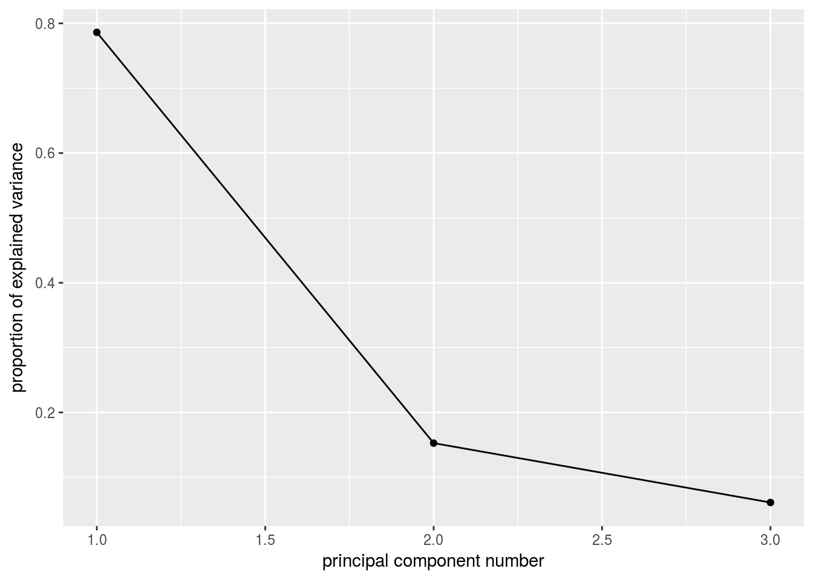
See how the first PC captures the variability in the Assault levels and Murder levels, with a single score.
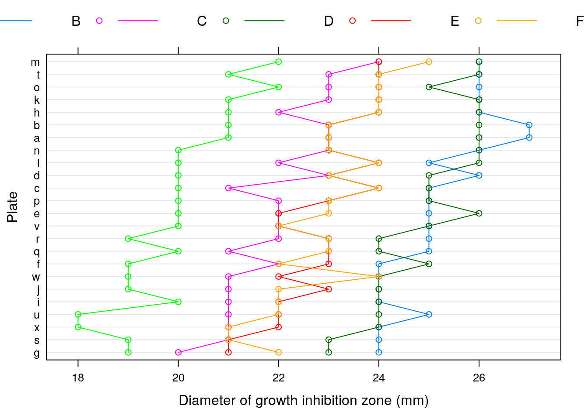
More implementations of PCA:
# FAST solutions:
gmodels::fast.prcomp()
# More detail in output:
FactoMineR::PCA()
# For flexibility in algorithms and visualization:
ade4::dudi.pca()
# Another one...
amap::acp()10.1.5.2 FA
fa.1 <- psych::principal(USArrests.1, nfactors = 2, rotate = "none")
fa.1## Principal Components Analysis
## Call: psych::principal(r = USArrests.1, nfactors = 2, rotate = "none")
## Standardized loadings (pattern matrix) based upon correlation matrix
## PC1 PC2 h2 u2 com
## Murder 0.89 -0.36 0.93 0.0688 1.3
## Assault 0.93 -0.14 0.89 0.1072 1.0
## Rape 0.83 0.55 0.99 0.0073 1.7
##
## PC1 PC2
## SS loadings 2.36 0.46
## Proportion Var 0.79 0.15
## Cumulative Var 0.79 0.94
## Proportion Explained 0.84 0.16
## Cumulative Proportion 0.84 1.00
##
## Mean item complexity = 1.4
## Test of the hypothesis that 2 components are sufficient.
##
## The root mean square of the residuals (RMSR) is 0.05
## with the empirical chi square 0.87 with prob < NA
##
## Fit based upon off diagonal values = 0.99biplot(fa.1, labels = rownames(USArrests.1)) 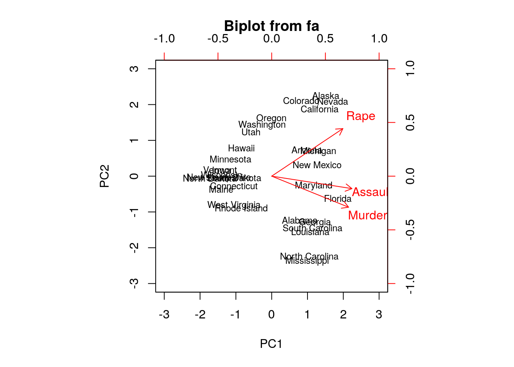
# Numeric comparison with PCA:
fa.1$loadings##
## Loadings:
## PC1 PC2
## Murder 0.895 -0.361
## Assault 0.934 -0.145
## Rape 0.828 0.554
##
## PC1 PC2
## SS loadings 2.359 0.458
## Proportion Var 0.786 0.153
## Cumulative Var 0.786 0.939pca.1$rotation## PC1 PC2 PC3
## Murder -0.5826006 0.5339532 -0.6127565
## Assault -0.6079818 0.2140236 0.7645600
## Rape -0.5393836 -0.8179779 -0.1999436Things to note:
- We perform FA with the
psych::principalfunction. - The first factor (
fa.1$loadings) has different weights than the first PC (pca.1$rotation) because of normalization. They are the same, however, in that the first PC, and the first factor, capture average crime levels.
Graphical model fans will like the following plot, where the contribution of each variable to each factor is encoded in the width of the arrow.
# Graph comparison: loadings encoded in colors
qgraph::qgraph(fa.1)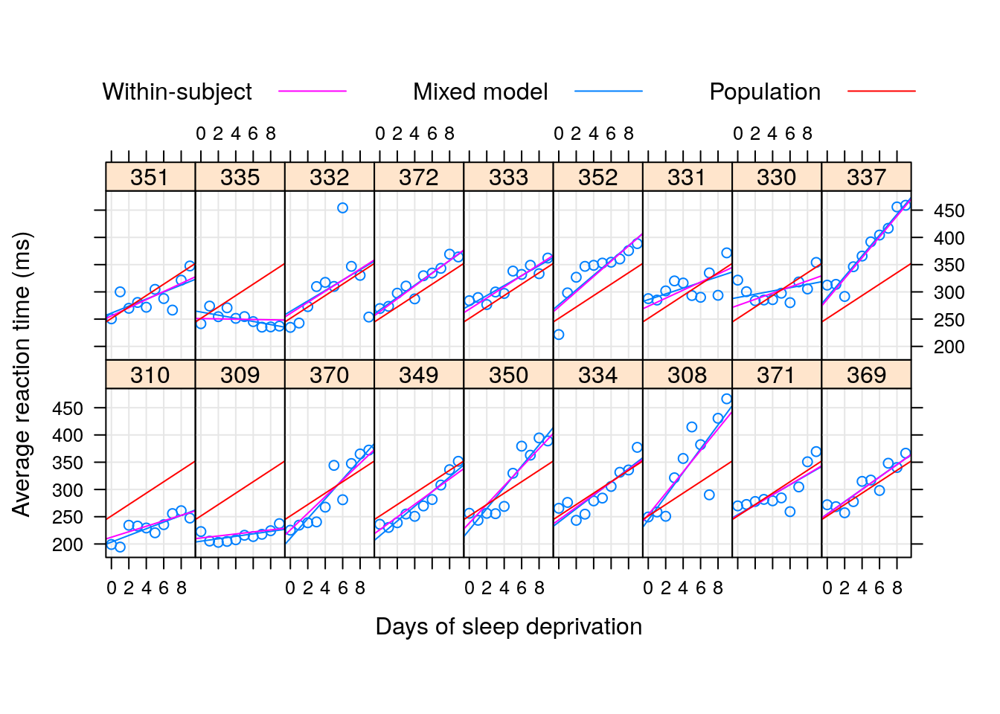
Let’s add a rotation (Varimax), and note that the rotation has indeed changed the loadings of the variables, thus the interpretation of the factors.
fa.2 <- psych::principal(USArrests.1, nfactors = 2, rotate = "varimax")
fa.2$loadings##
## Loadings:
## RC1 RC2
## Murder 0.930 0.257
## Assault 0.829 0.453
## Rape 0.321 0.943
##
## RC1 RC2
## SS loadings 1.656 1.160
## Proportion Var 0.552 0.387
## Cumulative Var 0.552 0.93910.1.5.3 ICA
ica.1 <- fastICA::fastICA(USArrests.1, n.com=2) # Also performs projection pursuit
plot(ica.1$S)
abline(h=0, v=0, lty=2)
text(ica.1$S, pos = 4, labels = rownames(USArrests.1))
# Compare with two PCA (first two PCs):
arrows(x0 = ica.1$S[,1], y0 = ica.1$S[,2], x1 = pca.1$x[,2], y1 = pca.1$x[,1], col='red', pch=19, cex=0.5)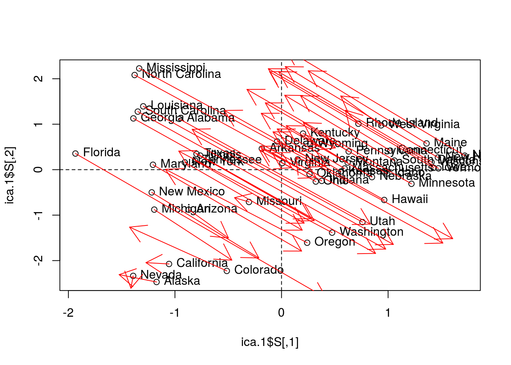
Things to note:
- ICA is fitted with
fastICA::fastICA. - The ICA components are very different than the PCA components.
10.1.5.4 MDS
Classical MDS, also compared with PCA.
# We first need a dissimarity matrix/graph:
state.disimilarity <- dist(USArrests.1)
mds.1 <- cmdscale(state.disimilarity)
plot(mds.1, pch = 19)
abline(h=0, v=0, lty=2)
USArrests.2 <- USArrests[,1:2] %>% scale
text(mds.1, pos = 4, labels = rownames(USArrests.2), col = 'tomato')
# Compare with two PCA (first two PCs):
points(pca.1$x[,1:2], col='red', pch=19, cex=0.5)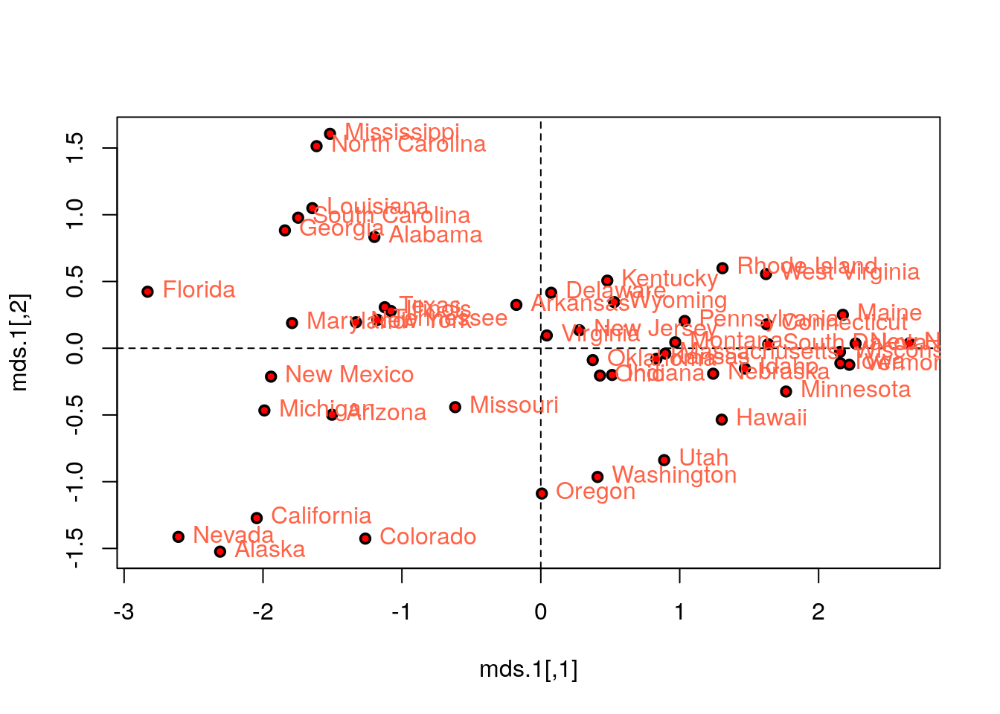
Things to note:
- For MDS, we first compute a dissimilarity graph with
dist, and then learn the embedding withcmdscale. - As previously stated, the embedding of PCA is the same as classical MDS with Euclidean distances.
- See the
cluster::daisyfunction for more dissimilarity measures.
Let’s try other strain functions for MDS, like Sammon’s strain, and compare it with the PCs.
mds.2 <- MASS::sammon(state.disimilarity, trace = FALSE)
plot(mds.2$points, pch = 19)
abline(h=0, v=0, lty=2)
text(mds.2$points, pos = 4, labels = rownames(USArrests.2))
# Compare with two PCA (first two PCs):
arrows(
x0 = mds.2$points[,1], y0 = mds.2$points[,2],
x1 = pca.1$x[,1], y1 = pca.1$x[,2],
col='red', pch=19, cex=0.5)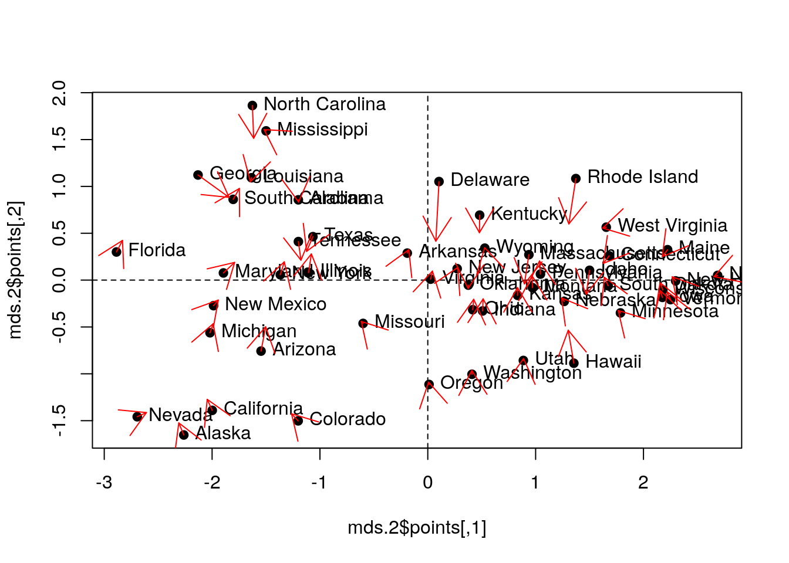
Things to note:
MASS::sammondoes the fitting.- The embedding returned by the Sammon strain is different than that of the first two PCs.
10.1.5.5 Sparse PCA
# Compute similarity graph
state.similarity <- MASS::cov.rob(USArrests.1)$cov
spca1 <- elasticnet::spca(state.similarity, K=2, type="Gram", sparse="penalty", trace=FALSE, para=c(0.06,0.16))
spca1$loadings## PC1 PC2
## Murder -0.72036274 0
## Assault -0.69112808 0
## Rape -0.05847647 -110.1.5.6 Kernel PCA
kernlab::kpca()10.2 Clustering
In clustering problems, we seek to group observations that are similar.
There are many motivations for clustering:
- Understanding: The most common use of clustering is probably as a an exploratory step, to identify homogeneous groups in the data.
- Dimensionality reduction: Clustering may be seen as a method for dimensionality reduction. Unlike the approaches in the Dimensionality Reduction Section 10.1, it does not “compress” variables but rather observations. Each group of homogeneous observations may then be represented as a single prototypical observation of the group.
- Pre-Labelling: Clustering may be performed as a pre-processing step for supervised learning, when labeling all the samples is impossible due to “budget” constraints, like in Example 10.7. This is sometimes known as pre-clustering.
Clustering, like dimensionality reduction, may rely on some latent variable generative model, or on purely algorithmic approaches.
10.2.1 Latent Variable Approaches
10.2.1.1 Finite Mixture
A finite mixture is the marginal distribution of \(K\) distinct classes, when the class variable is latent. This is useful for clustering since we can assume the number of classes, \(K\), and the distribution of each class. We can then use maximum likelihood estimation to fit the mixture distribution and assign observations to the most probable class.
10.2.2 Purely Algorithmic Approaches
10.2.2.1 K-means
The K-means algorithm is possibly the most popular clustering algorithm. The goal behind K-means clustering algorithm is finding a representative point for each of K clusters, and assign each data point to one of these clusters. As each cluster has a representative point, this is also a prototype method The clusters are defined so that they minimize the average Euclidean distance between all points to the center of the cluster.
In K-means, the clusters are first defined, and then similarities computed. This is thus a top-down method.
K-means clustering requires the raw features \(X\) as inputs, and not only a similarity graph. This is evident when examining the algorithm below.
The k-means algorithm works as follows:
- Choose the number of clusters \(K\).
- Arbitrarily assign points to clusters.
- While clusters keep changing:
- Compute the cluster centers as the average of their points.
- Assign each point to its closest cluster center (in Euclidean distance).
- Return Cluster assignments and means.
10.2.2.2 K-means++
K-means++ is a fast version of K-means thanks to a smart initialization.
10.2.2.3 K-medoids
If a Euclidean distance is inappropriate for a particular set of variables, or that robustness to corrupt observations is required, or that we wish to constrain the cluster centers to be actual observations, then the K-Medoids algorithm is an adaptation of K-means that allows this. It is also known under the name partition around medoids (PAM) clustering.
The k-medoids algorithm works as follows.
- Given a dissimilarity graph.
- Choose the number of clusters \(K\).
- Arbitrarily assign points to clusters.
- While clusters keep changing:
- Within each cluster, set the center as the data point that minimizes the sum of distances to other points in the cluster.
- Assign each point to its closest cluster center.
- Return Cluster assignments and centers.
10.2.2.4 Hirarchial Clustering
Hierarchical clustering algorithms take dissimilarity graphs as inputs. Hierarchical clustering is a class of greedy graph-partitioning algorithms. Being hierarchical by design, they have the attractive property that the evolution of the clustering can be presented with a dendogram, i.e., a tree plot.
A particular advantage of these methods is that they do not require an a-priori choice of the number of cluster (\(K\)).
Two main sub-classes of algorithms are agglomerative, and divisive.
Agglomerative clustering algorithms are bottom-up algorithm which build clusters by joining smaller clusters. To decide which clusters are joined at each iteration some measure of closeness between clusters is required.
- Single Linkage: Cluster distance is defined by the distance between the two closest members.
- Complete Linkage: Cluster distance is defined by the distance between the two farthest members.
- Group Average: Cluster distance is defined by the average distance between members.
- Group Median: Like Group Average, only using the median.
Divisive clustering algorithms are top-down algorithm which build clusters by splitting larger clusters.
10.2.2.5 Fuzzy Clustering
Can be thought of as a purely algorithmic view of the finite-mixture in Section 10.2.1.1.
10.2.3 Clustering in R
10.2.3.1 K-Means
The following code is an adaptation from David Hitchcock.
k <- 2
kmeans.1 <- stats::kmeans(USArrests.1, centers = k)
head(kmeans.1$cluster) # cluster asignments## Alabama Alaska Arizona Arkansas California Colorado
## 1 1 1 2 1 1# Visualize using scatter plots of the original features
pairs(USArrests.1, panel=function(x,y) text(x,y,kmeans.1$cluster))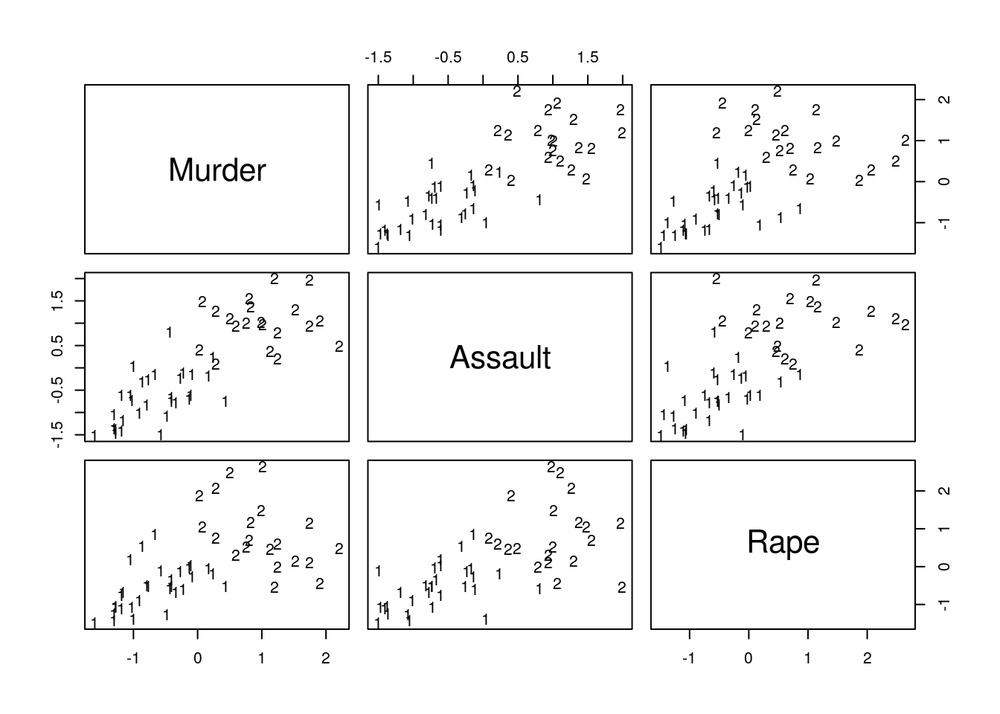
Things to note:
- The
stats::kmeansfunction does the clustering. - The cluster assignment is given in the
clusterelement of thestats::kmeansoutput. - The visual inspection confirms that similar states have been assigned to the same cluster.
10.2.3.2 K-means ++
K-Means++ is a smart initialization for K-Means. The following code is taken from the r-help mailing list.
# Write my own K-means++ function.
kmpp <- function(X, k) {
n <- nrow(X)
C <- numeric(k)
C[1] <- sample(1:n, 1)
for (i in 2:k) {
dm <- pracma::distmat(X, X[C, ])
pr <- apply(dm, 1, min); pr[C] <- 0
C[i] <- sample(1:n, 1, prob = pr)
}
kmeans(X, X[C, ])
}
# Examine output:
kmeans.2 <- kmpp(USArrests.1, k)
head(kmeans.2$cluster)## Alabama Alaska Arizona Arkansas California Colorado
## 1 1 1 2 1 110.2.3.3 K-medoids
state.disimilarity <- dist(USArrests.1)
kmed.1 <- cluster::pam(x= state.disimilarity, k=2)
head(kmed.1$clustering)## Alabama Alaska Arizona Arkansas California Colorado
## 1 1 1 1 1 1plot(pca.1$x[,1], pca.1$x[,2], xlab="PC 1", ylab="PC 2", type ='n', lwd=2)
text(pca.1$x[,1], pca.1$x[,2], labels=rownames(USArrests.1), cex=0.7, lwd=2, col=kmed.1$cluster)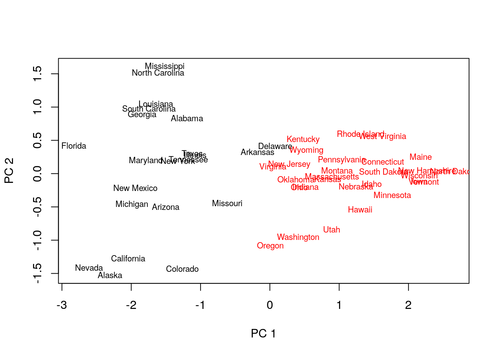
Things to note:
- K-medoids starts with the computation of a dissimilarity graph, done by the
distfunction. - The clustering is done by the
cluster::pamfunction. - Inspecting the output confirms that similar states have been assigned to the same cluster.
- Many other similarity measures can be found in
proxy::dist(). - See
cluster::clara()for a big-data implementation of PAM.
10.2.3.4 Hirarchial Clustering
We start with agglomerative clustering with single-linkage.
# Single linkage:
hirar.1 <- hclust(state.disimilarity, method='single')
plot(hirar.1, labels=rownames(USArrests.1), ylab="Distance")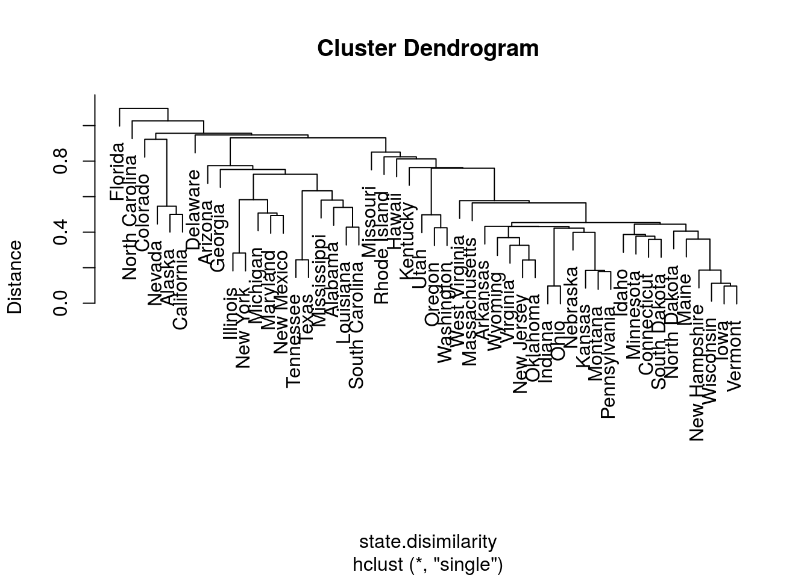
Things to note:
- The clustering is done with the
hclustfunction. - We choose the single-linkage distance using the
method='single'argument. - We did not need to a-priori specify the number of clusters, \(K\).
- The
plotfunction has a particular method forhclustclass objects, and plots them as dendograms.
We not try other types of linkages, to verify that the indeed affect the clustering.
# Complete linkage:
hirar.2 <- hclust(state.disimilarity, method='complete')
plot(hirar.2, labels=rownames(USArrests.1), ylab="Distance")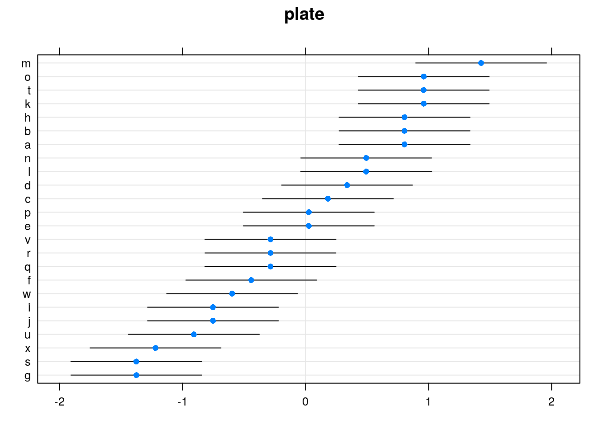
# Average linkage:
hirar.3 <- hclust(state.disimilarity, method='average')
plot(hirar.3, labels=rownames(USArrests.1), ylab="Distance")
If we know how many clusters we want, we can use cuttree to get the class assignments.
# Fixing the number of clusters:
cut.2.2 <- cutree(hirar.2, k=2)
head(cut.2.2) # printing the "clustering vector"## Alabama Alaska Arizona Arkansas California Colorado
## 1 1 1 2 1 110.3 Bibliographic Notes
For more on PCA see my Dimensionality Reduction Class Notes and references therein. For more on everything, see Friedman, Hastie, and Tibshirani (2001). For a softer introduction, see James et al. (2013).
Bibliography
Hotelling, Harold. 1933. “Analysis of a Complex of Statistical Variables into Principal Components.” Journal of Educational Psychology 24 (6). Warwick & York: 417.
Pearson, Karl. 1901. “LIII. on Lines and Planes of Closest Fit to Systems of Points in Space.” The London, Edinburgh, and Dublin Philosophical Magazine and Journal of Science 2 (11). Taylor & Francis: 559–72.
Graham, RL. 1988. “Isometric Embeddings of Graphs.” Selected Topics in Graph Theory 3. Academic Press San Diego, CA: 133–50.
Friedman, Jerome, Trevor Hastie, and Robert Tibshirani. 2001. The Elements of Statistical Learning. Vol. 1. Springer series in statistics Springer, Berlin.
James, Gareth, Daniela Witten, Trevor Hastie, and Robert Tibshirani. 2013. An Introduction to Statistical Learning. Vol. 6. Springer.
You are probably used to thinking of the dimension of linear spaces. We will not rigorously define what is the dimension of a manifold, but you may think of it as the number of free coordinates needed to navigate along the manifold.↩
The term Graph is typically used in this context instead of Network. But a graph allows only yes/no relations, while a network, which is a weighted graph, allows a continuous measure of similarity (or dissimilarity). Network is thus more appropriate than graph.↩
Then again, it is possible that the true distances are the white matter fibers connecting going within the cortex, in which case, Euclidean distances are more appropriate than geodesic distances. We put that aside for now.↩